The tour
Cinematic mode opens on an authored glide. A centripetal spline is played by distance, so a long span does not rush and a short one does not stall. Each hero frame puts a subject on a third. Bridges between districts are not hero frames, so a cut lands on the picture.
The path stays outside landmark roofs. Street knots are dropped when the eye or the look-ahead sits in solid ground. Eye height eases toward a clear height instead of jumping. The sea-wall hero keeps the height it was given, seaward of the toe, looking up the treads.
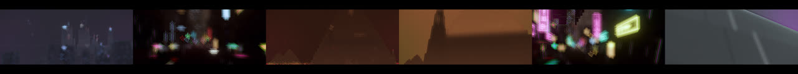
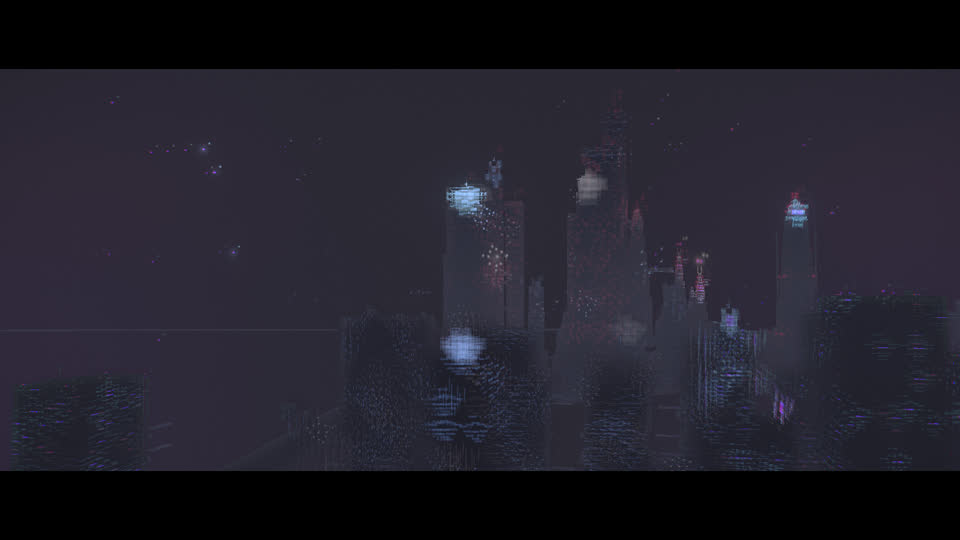
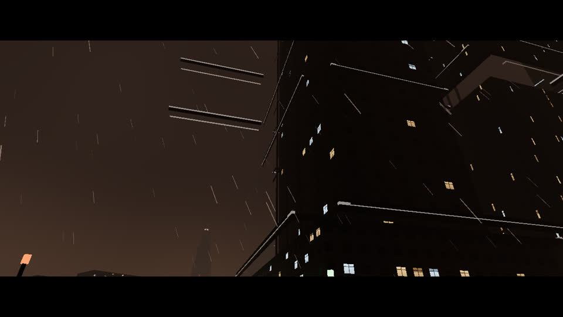
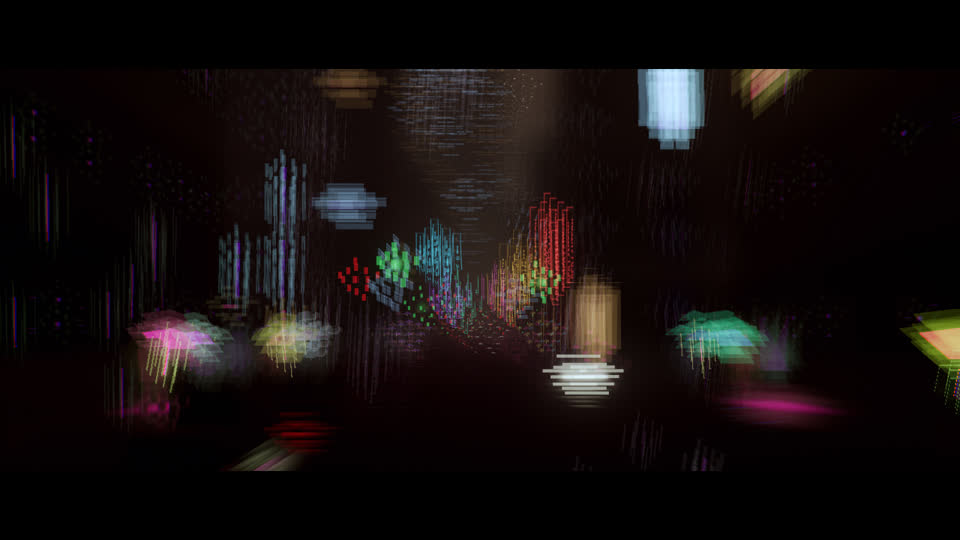
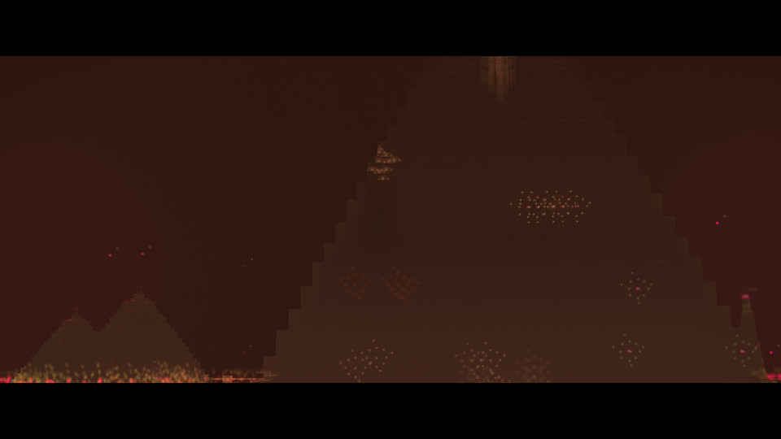
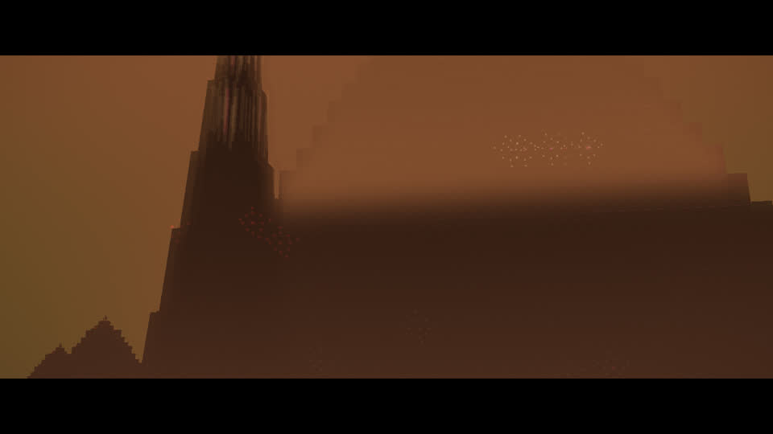
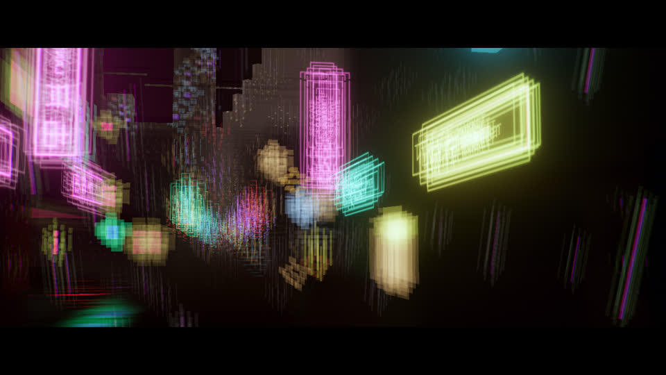
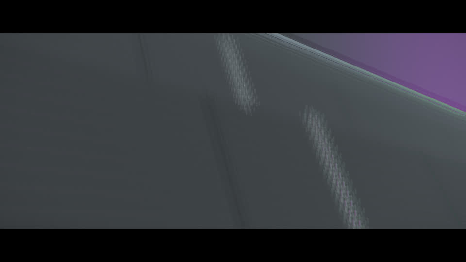
Photo mode
Press P. The free camera keeps focal length, f-stop, and focus. Autofocus can be turned off. Exposure, grain, vignette, bloom, and a grade sit on the picture. Letterbox choices include 2.39:1, 16:9, 9:19.5, and 1:1. Hide clears the chrome. The shutter writes a tiled JPEG, capped by the graphics tier. Time and weather sliders override the world while the mode is open.
Grades in the spirit of this city: orange haze, cold cyan night, amber ruin, plus the older sodium, neon, ash, and harbor looks. They run after tone mapping, so a later change to the scene's tone curve does not flatten them.
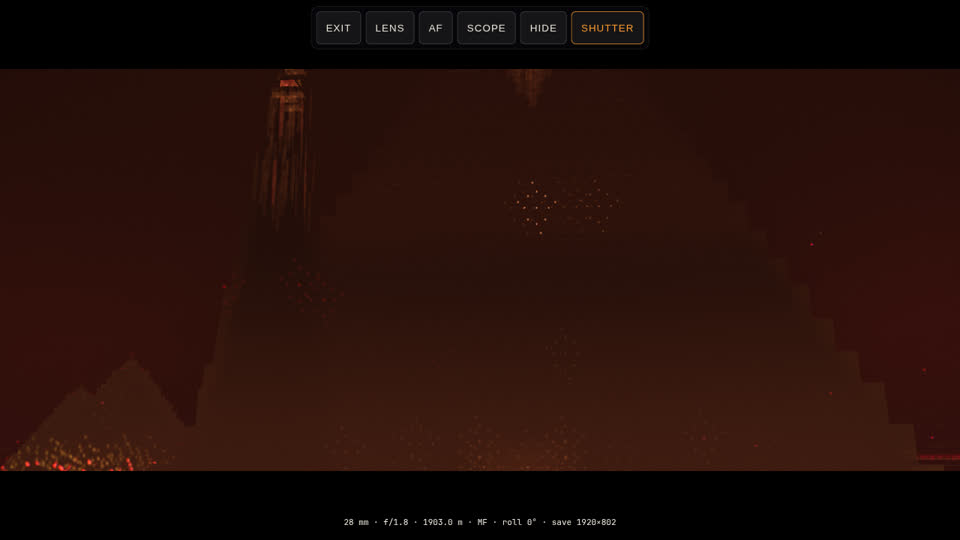
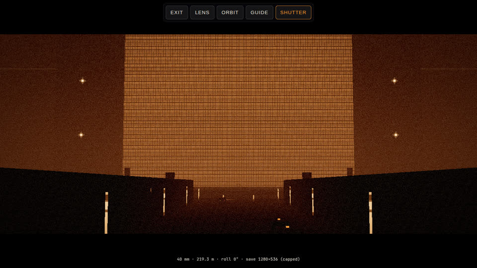
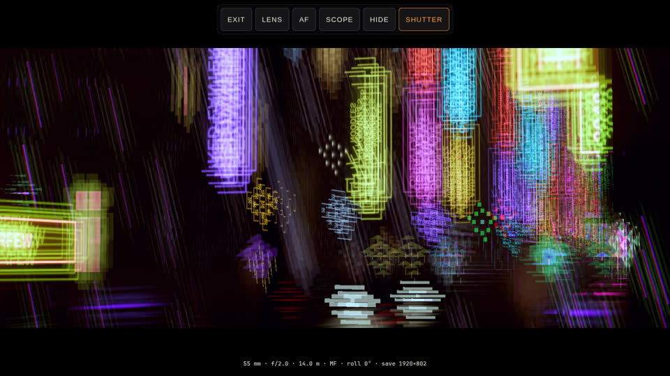
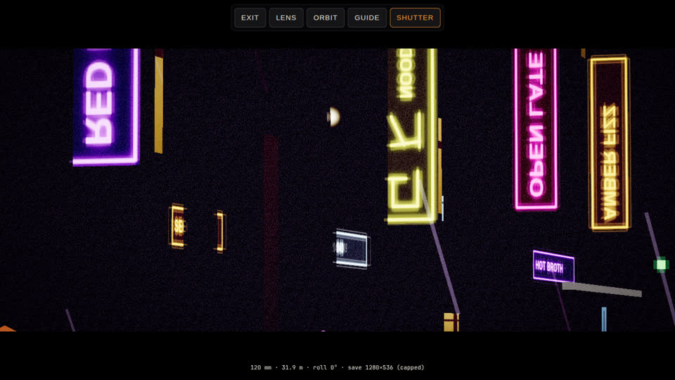
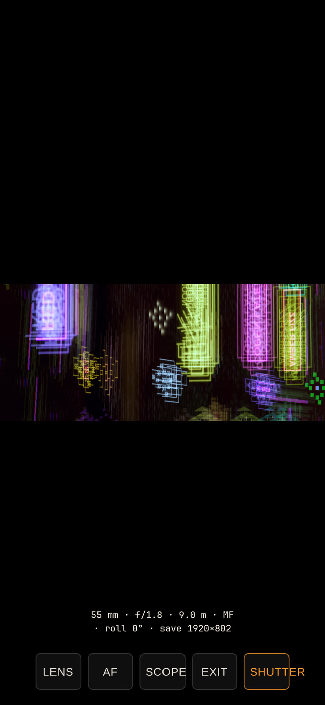
Lens
Depth of field uses a thin-lens circle of confusion. Focal length, f-stop, and focus distance set the blur, in pixels of the film height. The gather reads the linear scene colour, which is where a lens bends light. An oval gather, a short horizontal highlight streak, and a little edge fringing are the scope option. The tour itself stays spherical, with a small streak. Grain is a hashed value, heavier in the shadows. A gentle vignette darkens the corners. Motion smear stretches the gather along the camera's travel and resets when the camera jumps. Spinner flight and storm shake use slow incommensurate sines. Reduced motion, from the operating system or the Calm camera checkbox, forces shake and smear to zero.
The print — grade, grain, vignette — is a node after renderOutput(). Bloom stays in linear light, before that. Walk and fly keep the existing render path. The cinematic lens is its own pass, used while that mode is on.
Tiers: low is a five-tap gather with no smear, streak, or fringing. Medium adds a lighter smear and a short streak. High and ultra add bloom, a wider gather, and fringing. Ultra uses 33 gather taps, a 28 px cap, and a longer streak.
Controls
| Action | Desktop | Phone | Gamepad |
|---|---|---|---|
| Tour, next beat | Next shot, or T | Next shot | A or RB |
| Restart the tour | Tour button | Tour button | Y |
| Enter or leave photo | P, or Exit | Exit on the dock | B leaves |
| Look and move | Mouse and WASD | One finger looks, two fingers truck, pinch zooms | Sticks |
| Focus | Slider, or F for autofocus | Tap the picture, or AF | LT and RT |
| Focal length | Wheel | Pinch | LB and RB |
| f-stop | Shift and the wheel, or comma and period | Lens sheet | D-pad with the sheet |
| Scope, grade, matte | Scope, G, L | Scope on the dock | D-pad cycles grade |
| Shutter | K | Shutter | A |
| Hide chrome | H, or Hide | Lens sheet |
The lens sheet starts closed. Lens opens it on the left, clear of the top bar. A desktop click pass confirmed AF, Scope (anamorphic plus the 2.39 matte), Hide, and Show. Calm camera holds the tour on the current hero. Next shot and the gamepad cut still step to the next still.
Tiers and frame rate
Measured in this VM on SwiftShader, WebGL2, 1280×720, device pixel ratio 1, cinematic mode, lens pass on. The tier pixel-ratio caps are 1, 1.5, 2, and 3. At a device ratio of 1 those caps stay idle, so high and ultra share the same city resolution. The city draw is most of the frame.
| Tier | FPS | Frame | Lens |
|---|---|---|---|
| Low | 1.54 | 650 ms | 5 taps, 6 px, no smear, no streak, no fringing |
| Medium | 0.60 | 1667 ms | 9 taps, 10 px, short smear, 4 streak taps |
| High | 0.54 | 1850 ms | 13 taps, 16 px, bloom, 8 streak taps |
| Ultra | 0.53 | 1883 ms | Measured at 17 taps. The gather is now 33 taps, 28 px, 16 streak taps |
These are software-renderer numbers on this machine, not a phone. On a display whose device ratio is above 1, medium, high, and ultra also raise the drawing-buffer cap, which is the larger cost.
Critics
Two reviewers who did not write the code. Each round used the latest stills. The bar was 7 out of 10.
Cinematography
| Round | Overall | What changed after |
|---|---|---|
| 1 | 4.5 | The establish was a wall. The sea wall was fog. The pyramid was a texture. |
| 2 | 5.5 | Skyline and pyramid mass landed. Grades were still brown. The avenue was a speck. |
| 3 | 6 | Establish went cold cyan. Orange was washed by a daylight capture. |
| 4 | 6.5 | Orange shadows went dark again. The avenue gained a floor. The sea wall was still a blank face. |
| 5 | 7 | Terrace courses and tread runs are on the face. The set clears 7. |
| Frame | Framing | Lens | Grade |
|---|---|---|---|
| Establish | 6 | 4 | 6 |
| Avenue | 6 | 5 | 6 |
| Pyramid | 7 | 4 | 6 |
| Silhouette | 7 | 6 | 6 |
| Canyon | 7 | 5 | 7 |
| Sea wall | 6 | 5 | 6 |
| Photo, pyramid dusk | 6 | 3 | 6 |
| Photo, canyon rain | 5 | 6 | 5 |
Technical and UX
| Round | Overall | What changed after |
|---|---|---|
| 1 | 4 | The phone shutter was clipped. The sheet covered the desktop bar. |
| 2 | 6 | Phone dock and desktop bar were usable. The tour still moved under reduced motion. |
| 3 | 7 | Reduced motion holds the hero. Eye height eases. The sheet starts closed. |
| Area | Score |
|---|---|
| Smoothness and clipping | 7 |
| Desktop controls | 8 |
| Phone controls | 7 |
| Reduced motion | 7 |
| Tiers | 6 |
Sources
These were read for the method. The shaders, the spline, and the grades are written for this project. Nothing was copied from them, and no film asset was downloaded.
- GPUOpen, AMD FidelityFX Depth of Field 1.1: thin-lens circle of confusion and a gather in linear scene colour.
- NVIDIA GPU Gems 3, chapter 28: the same thin-lens relation of focal length, f-stop, and focus distance.
- three.js WebGPU post-processing manual, and the
renderOutputpath, for placing tone mapping before the print. - Masaki Kawase, “Practical Techniques for a Two-Unit Linear-Space Effect,” SIGGRAPH 2015, Silicon Studio: horizontal anamorphic streaks and oval bokeh as a gather, not a baked kernel. This city's scope option is the squeeze. The tour stays spherical. The 2.39 frame is a crop.
- Epic Games, spline distance queries: play a camera spline by arc length so speed stays even.
- Ghost of Tsushima photo mode, as a feature list only: focal length, grades, time and weather, hide the HUD. No code was taken from it.
Visual-test baselines were left as they are. This change does not replace them.